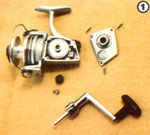
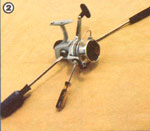
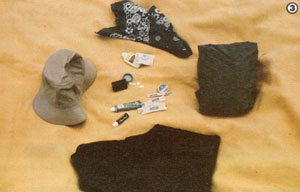

In our last issue, Randy Kidd provided equipment-choosing tips for beginning anglers . . . now he's back to tell you how to use that tackle to haul in some delicious meals!
Equipping yourself with the proper gear and bait for the type of fish dinner you favor most is, of course, only the first step in putting that tasty food on your plate. So, in the final section of this two-part article, I'm going to concentrate on telling you how to entice your quarry into biting . . . and what to do once that happens.
V. KNOW THE FISH'S WATER PREFERENCE
Every area has its "fishin' holes", and if you find yourself a fishing-fanatic friend, as I suggested in MOTHER NO. 68, he or she will likely show you most- though probably not all-of his or her pet "hot spots". But there are other folk (owners of tackle shops and sporting goods stores, for example) who, in order to get your continued business, will point you toward (if not that particular person's own favorite spots) good angling areas.
Since most fish spawn in shallow water and seek the cooler depths during hot weather, check out maps (they're usually available for large lakes and reservoirs) that show the topography beneath the body of water that you're fishing. Other sources of information may include chambers of commerce (for maps), as well as a state's fish and game commission or its parks and recreation department. (The telephone numbers for local branches of such agencies can often be found at town libraries.)
But, even without advice or maps, you can still take an educated guess at where the fish will be. In a lake or pond, for instance, many species (such as bass) tend to gather at points where a stream enters the larger body of water, to eat the food carried in by the current. Furthermore, any underwater obstacle (such as the fallen trees and "fields" of stumps found beneath the surface of many man-made reservoirs) will attract fish, since it offers them a year-round hiding place. Remember, too, that a lake bottom's contour will generally mirror the shoreline near it. A sheer cliff next to the water's edge will usually drop off rapidly into deep water, while a beach that extends away from the lake in a flat plain will frequently produce gradually deepening shallows.
A river or stream is-in most cases-even easier to "read" than is a lake, pond, or reservoir. In moving water, most fish (especially trout) like to hang out just above and below riffles . . . and either side of the downstream "V" that's formed by the current is also likely to be a very productive place to plop your bait. The deep holes found below many fastmoving sections of water can contain fish, as well (such critters are most easily caught at the upstream edge of the pool, where food is often deposited). Also look for hungry swimmers at the edge of eddies formed by any projecting limbs, and underneath overhanging banks and roots. And when you catch a good fish from a stream or river, remember the spot . . . odds are another trophy will shortly move in to take over the "prime" location!
VI. DON'T MISS A FISH-CATCHING SEASON
There's only one season for fishing . . . year round. Spring, for example, can result in rapid-fire post-spawning action. Then, as the water warms up, the best fishing will often be around protective "lairs" such as submerged logs, stumps, and roots . . . underwater brush piles and weedy beds . . . rocky drop-offs (where a river once ran, for example) . . . and the areas beneath piers, bridges, and boat docks.
Keep in mind that the sun's heat causes lake and pond water to stratify into an upper layer of warm water (containing less oxygen) and a lower layer of cooler, denser water. Neither of these strata offers a "fish-comfortable" environment, but between the two there's a temperature- and oxygen-perfect region called the thermocline . . . and the secret of successful summer fishing is often to find this layer.
The thermocline can be located with expensive gadgets that'll give you both temperature and oxygen-level readouts, but-for much less money-you can simply troll the lake at different depths (varying the weights used and the speed of your boat), or try setting your bobber at different places on your line, until you catch a fish . . . then, when you do get some action, keep angling at that level.
Some fish are warm-water lovers, and they will feast best when the temperature's climbing. Largemouth and smallmouth bass, for instance, while preferring shady areas, will feed throughout the summer (although really hot weather will sometimes cause them to move into deep water during the day and come into the shallows to eat at night), and channel catfish seem to search out food most actively when the water reaches approximately 80° F.
Come autumn, the underwater temperature stratification begins to break up . . . and-with this change-many species go into a real feeding frenzy. That's the time to fish the shoreline, near submerged weeds or structures or along rocky drop-offs.
During the winter, most of the coldblooded creatures will be bunched together in protective schools . . . usually around the underwater brush piles and the like. (Of course, you may have to chop your way through some ice before you can drop a line, but the effort will help to keep you warm.) Coldweather feeders tend to nibble on food rather than gulp it, so the ice-fisherperson must be ready-at the slightest nudge-to "set the hook" (that is, to raise the rod sharply, so that the steel barb gets a good hold in the fish's mouth).
VII. FEEL THE FISH
And just how does one detect the presence of soft-mouth nudgers and spit-it-out tasters? It's a matter of becoming familiar with the subtle pull or "buzz" that is transmitted to the angler when a gentle-mouthed bait-grabber taste-tests an offering. With a bit of practice you'll learn to let the very end of the rod-or a sensitive fingertip held against the line itself-communicate the message.
If you're using a bobber, watch it closely. A fish that nudges the bait from underneath or from the side will tip it only slightly in one direction or another. Anytime a small movement of the float tells you that there's a nibbler below, try to set the hook (that is, unless you discover that the feeding habit of the fish you're after is to investigate the bait gingerly, perhaps without actually taking it into its mouth, before it strikes . . . because sometimes, by trying to set a hook before a fish has really taken the bait, you'll find yourself unable to connect with your quarry at all).
VIII. CARE FOR YOUR CATCH CAREFULLY
The best-tasting fish are fresh ones, sowhenever you can-fry them as you bring them in . . . over a lakeside or streamside fire. If you take your catch home, though (as is usually the case), keep the fish alive as long as possible by tying your stringer in moving water. And remember that your supper-to-be will survive longer if the device's cord or metal clasp is strung through the skin behind the lower jaw, rather than through the gills.
If the trip home from your fishing hole is a long one, put your catch on ice, or let the critters swim in a bucket-type live well, oxygenated by a battery-driven aerator made for aquariums or fish tanks.
Some folks think that leaving the skin on fish adds to the taste, and like to scale their catch before cleaning or filleting them. In my family, though, we just fillet and then skin-by running the knife between the hide and the flesh-nearly all our fish. It's quick and easy to do so, andwhen the job is done correctly with a very sharp, thin-bladed knife-there's almost no loss of meat or taste. (The leftover skeletons and innards can be buried, Indian-style, under the site of future corn or tomato plants.)
We also fillet catfish, but remove the tough skin from such critters first. This is relatively easy to do if you simply cut an encircling slice behind the pectoral-or side-fins, and then peel the hide downward toward the tail, using a pair of pliers. (When skinning larger "cats", you may also have to slice around the dorsal-top-fin. )
And don't listen to folks who try to tell you that trout (or any other personal favorite) is the only fish worth eating. Carp, for example, which is considered by many people (in this country, at any rate) to be a "trash" fish, is actually delicious! We've had smoked carp, salmonstyle boiled carp, and fried carp fillets, and-when caught in cold, moving waters-they've all been as tasty as any of the "super species".
Some lakes, of course, should be selectively harvested-by keeping only large fish, for example-and local fishing regulations will describe the size and number limits that apply to certain species and/or certain bodies of water. And, in the case of your private pond (if you're lucky enough to have one), a state fisheries biologist can help you evaluate which fish you should keep and which ones to return to the water to insure an optimum haul in the future. Otherwise, make a feast of every fish you catch . . . and use the leftovers to fertilize your garden.
IX. SPARE THE ROD AND SPOIL THE REEL
The commonest cause of fishing equipment failure is human negligence, but a rig that's well looked after should last a lifetime. Actually, more rods are broken by errant feet and slammed car doors than are lost to fighting fish. To protect your pole against such accidents, fashion a good (and free) rod case from a sturdy, hollow cardboard tube of the type that new carpet's rolled around. (Ask at a local interior decorating firm.) Also, unless you want a permanently bowed rod, stow it so that it stands up straight or lies completely flat.
Get in the habit of checking the pole's guide wrappings before each trip, too. If their ends are coming loose, you can give the threads a light coat of clear nail polish to prevent further fraying . . . or have someone at a bait and tackle shop show you how to rewrap your own guides. (It's easier than it looks! )
It's a good idea to occasionally run your fingertips over all the guides, as well. If you feel any rough spots, smooth them with a piece of burlap or replace the worn part. And, as a routine step in every inspection, make sure all the visible screws are tight.
Your final check before setting out should be of the line itself. Theoretically, a good monofilament will last for years, but if you notice any roughness . . . if there's a chalky residue left behind when you run the line through your fingers . . . if it forms tight kinks after several feet are stripped off the reel . . . or if you can see crystals when it's held up to the light, replace the line with a new one.
And later, when you're actually on the shore, take a small sharpening stone to the tip of each hook. A finely honed point will work fishcatching miracles, while a dull barb will make setting the hook very difficult.
After each trip, loosen the drag mechanism on your reel, because continuing pressure on its alternating soft and hard metal washers will cause wear. And, at least once a year, take the reel apart and wash it thoroughly, then oil and grease it (lightly, please) according to the manufacturer's instructions.
X. ONLY THE COMFORTABLE CATCH FISH
In order not to waste valuable fishing time swatting at mosquitoes-or scare off a potential catch with chattering teeth-prepare a "comfort pack" and carry it with you on every trip. The kit should contain insect repellent, sunscreen, lip balm, several band-aids for the inevitable finger jabs, aspirin, and a seasickness medication (if your belly is wave-sensitive). The whole package can be stowed easily inside a sturdy plastic bag and carried in a small backpack or at the bottom of your tackle box.
Always figure, too, that the waterfront weather will be at least one wool sweater colder than it is at home, so roll a pullover inside a rain parka (an inexpensive plastic one will work fine) . . . and you'll have rain protection and an extra shell against the chill.
XI. KEEP A JOURNAL
Unless you maintain some records, it'll be easy to forget-over a year's timejust when and where your best catches were made. You'll be better equipped to duplicate past success if you keep a notebook listing your fishing trip dates, where you went, how many fish you caught, the bait used, the day's weather conditions, andif possible-the water's temperature.
XII. THERE'S MORE TO FISHING THAN CATCHING FISH
Finally, temper your developing skill with the belief that fishing shouldn't be merely a catch-all-you-can sport. Place a rod in your hand, and you'll have a good reason to relax your shoulders, smooth the furrow between your brows, soak up some sunshine, watch the squirrels and the birds, listen to the gentle lap of the shoreline waves, and inhale the green freshness of the waterside foliage. If you do nothing more than that, you'll have many a successful fishing trip!
|
 |
 |
 |